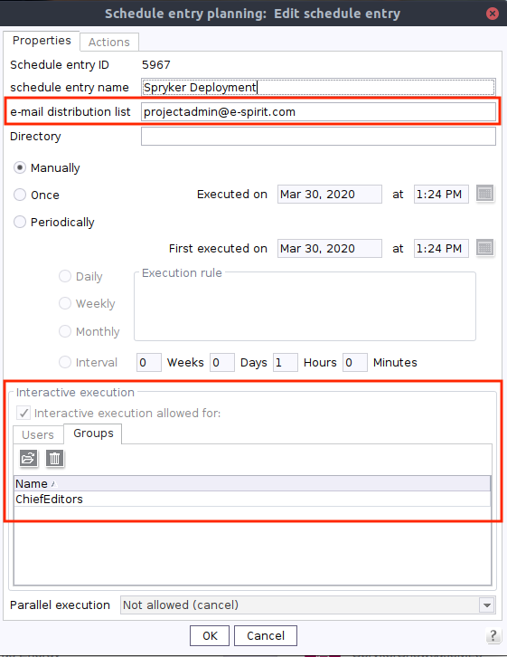

Generation schedule - full generation
By default, releasing content does not update the Online {c} and does not transfer data to . Instead, it only includes the {fs} release process, which can be mapped using the {bwfs} release workflow, for example. An update of the Online {c} as well as a data transfer to takes place only in the context of a deployment.
The deployment of released editorial content is executed via a {c} schedule.
Therefore the {refproject_github}[reference project] has the schedule Deployment, which is created within the {manager} in the menu:Project properties[Schedule management] area.
It can be started using the Publication action available in {cc} and contains the following actions:
The schedule executes a full generation and transfers the data to the Online {c}, which provides it to for import. The actions Initialize {c} Generation, {c} Generate, {c} Cleanup and Finalize {c} Generation are used to fill the Online {c}. They are described in the {caasdoc}.
The actions Execute Publish Media to CDN, Setup {c} Blocks Aggregations, Trigger Import, Trigger Fetch Logs, Trigger Cleanup, and Send Result Mail extend the schedule and are described in the following chapters.
|
In case of an error, the action Send Result Mail sends an e-mail with all relevant information to a recipient to be defined.
The recipient’s e-mail address must be specified in the field In addition, the

Figure 2. Properties of the schedule
|
Execute Publish Media to CDN
Unlike the content created with {fs}, the released media is not transferred to the {c}, but to the CDN provided by the {creator}. Therefore the schedule contains the script action Execute Publish Media to CDN.
import de.espirit.firstspirit.access.AdminService;
String SCHEDULER_NAME = "Media Deployment";
connection = context.getConnection();
adminService = connection.getService(AdminService.class);
scheduleStorage = adminService.getScheduleStorage();
scheduleEntry = scheduleStorage.getScheduleEntry(context.getProject(), SCHEDULER_NAME);
if(scheduleEntry != null) {
control = scheduleEntry.execute();
control.awaitTermination();
isSuccessful =
control.state.state.equals(de.espirit.firstspirit.access.schedule.RunState.SUCCESS);
if(!isSuccessful){
context.logWarning(SCHEDULER_NAME + " Completed with errors!");
}
context.logInfo("Schedule Entry executed...");
} else {
context.logError("Could not find schedule entry with name" + SCHEDULER_NAME);
}The script triggers the media generation schedule, which is also included in the supplied {refproject_github}[reference project].
The script contains the variable SCHEDULER_NAME, which has the name of the schedule as its value.
If the name changes, it must also be adjusted accordingly here.
Setup {c} Blocks Aggregations
By default, {c} stores and delivers the content transferred from {fs} page-based. However, the processing and persistence of editorial content in is done on the basis of CMS blocks, each corresponding to a {fs} section. In order to resolve this discrepancy, the data stored in the Online {c} must be prepared accordingly, before importing. For this reason, an aggregation must only be added to all collections of the Online {c}. This adjustment is not necessary for the Preview {c}, since the information in the preview is obtained directly from it and no processing takes place in .
The schedule contains the script action Setup {c} Blocks Aggregations to create the aggregations.
#!executable-class
com.espirit.ecom.contentconnect.spryker.module.caas.BlocksAggregationSetupExecutableThe script executes a PUT request for the configured collections of the Online {c}.
This generates the aggregations that are used to make all CMS blocks contained in the extended collections available for to import.
For this, the script requires the list of the relevant collections, which can be passed to it using the optional parameter caas_collections.
By default, the parameter has the value contentpages;categorypages;productpages;technical and therefore does not need to be configured in the {refproject_github}[reference project].
To overwrite the default value, the parameter caas_collections needs to be added in the script’s properties dialog.
Its value must correspond to a list of all collections, separated by semicolons, for which an aggregation is to be created.
Trigger Import
In {fs}, the creation and editing of editorial content takes place in the {cc}. After release, they are transferred by deployment to the Online {c} and imported from there by to be integrated into the shop. In order to keep the contents always up-to-date in , the import process must be triggered by the deployment. Therefore, the schedule contains the script action Trigger Import. The script activates a import job on side, which in turn triggers the import and persistence of the contents stored in the Online {c}.
#!executable-class
com.espirit.ecom.contentconnect.spryker.module.trigger.triggerimport.TriggerImportExecutable|
When using the B2C Demo Shop, the import may fail when accessing the |
|
References to categories or products that have been deleted or are inactive in will result in errors and warnings during import. Errors occurring in this context and recorded in the log are transferred to the {fs} log by the following action. |
Trigger Fetch Logs
Deleting or deactivating categories or products in that are referenced in the {fs} project leads to errors and warnings during the import. However, by default these are only recorded in the log. To provide all information about a release in one place, the errors and warnings must also be recorded in the {fs} log. Therefore, the schedule contains the script action Trigger Fetch Logs. It determines all errors and warnings for missing categories and products from the log and transfers them as warnings to the {fs} log. Operational managers are thus given the opportunity to react quickly to the outdated references in the {fs} project.
#!executable-class
com.espirit.ecom.contentconnect.spryker.module.trigger.triggerfetchlogs.TriggerFetchLogsExecutableTrigger Cleanup
The creation and editing of editorial content takes place in {fs} before it is transferred to the Online {c} via deployment and imported from there by . In order to keep the data in both systems up-to-date, deleted content from the {fs} project must also be removed on the side. Therefore, the schedule contains the script action Trigger Cleanup. The script triggers a comparison between the contents stored in the Online {c} and persisted in the data system. In this way, the obsolete data can be determined on the side and then removed.
#!executable-class
com.espirit.ecom.contentconnect.spryker.module.trigger.triggercleanup.TriggerCleanupExecutableSend Result Mail
In most cases, the deployment of the content created or edited in {fs} is performed via the {cc}.
However, the {cc} does not inform the editor whether a publication was successful or failed.
Therefore, the schedule contains the script action Send Result Mail.
In case of an error, this action sends an e-mail with all relevant information to the recipient defined in the e-mail distribution list field in the schedule’s properties.
Additionally the e-mail contains the possibility to forward these information to the Technical Support of the {creator}.
#! executable-class
com.espirit.ecom.contentconnect.spryker.module.schedule.ReviewScheduleResultExecutable